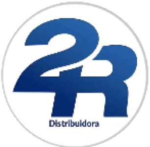
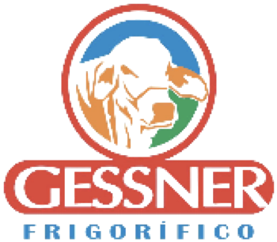
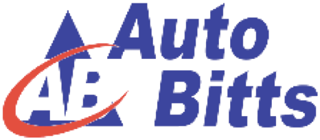
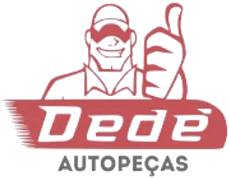
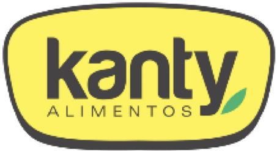
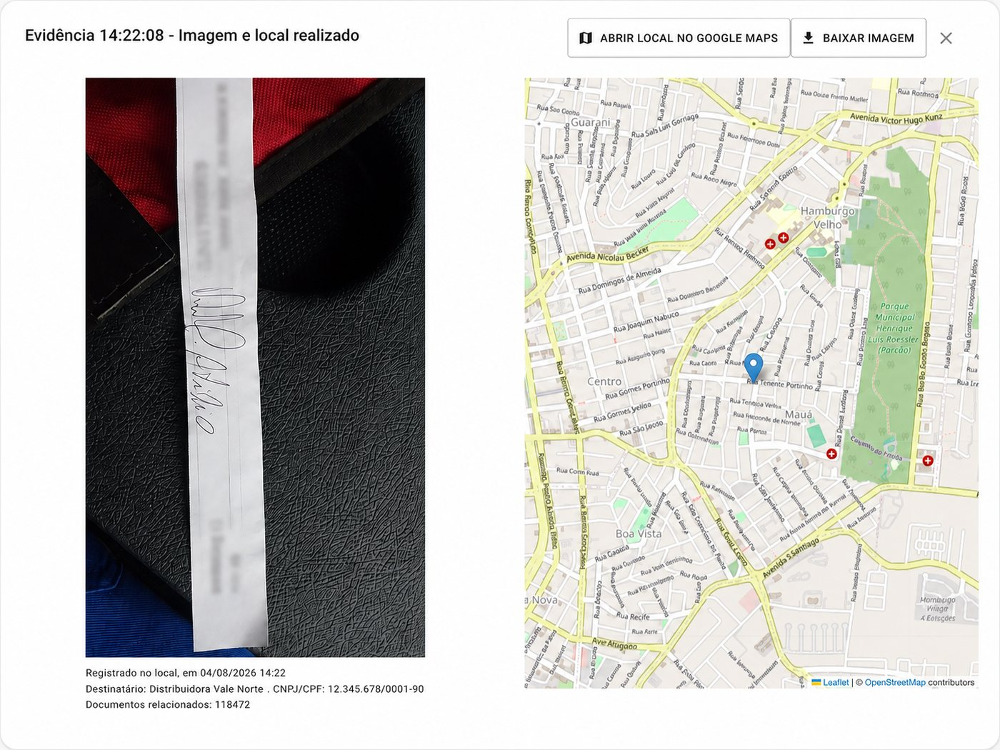
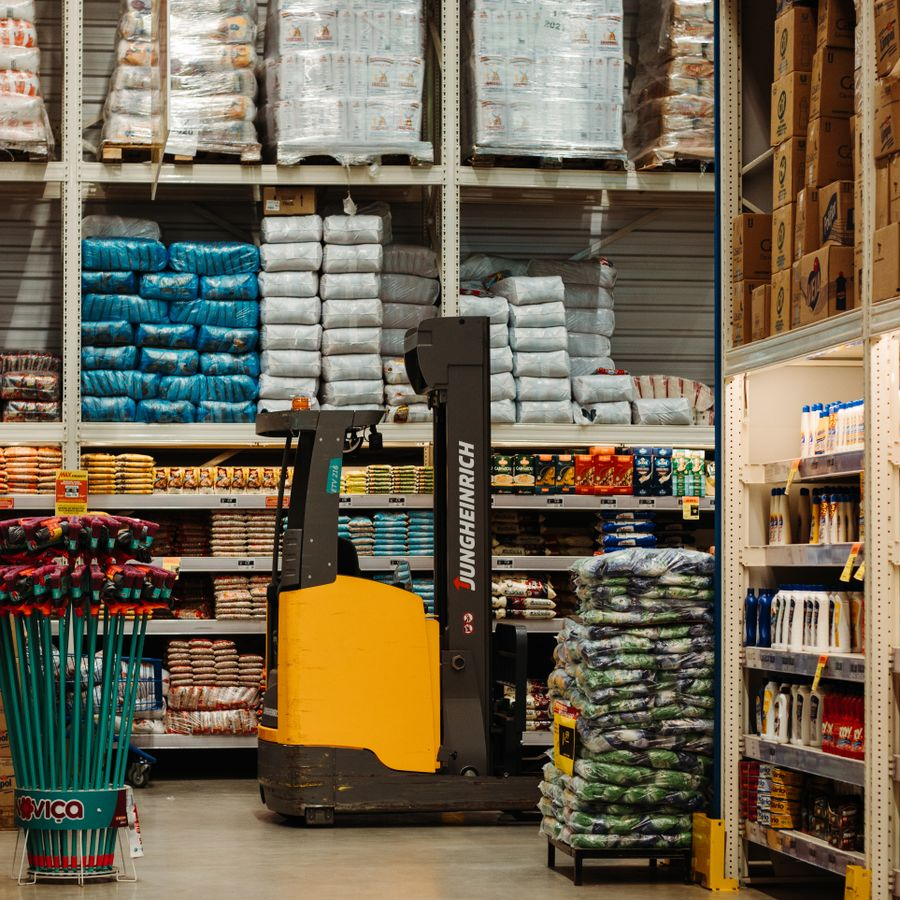
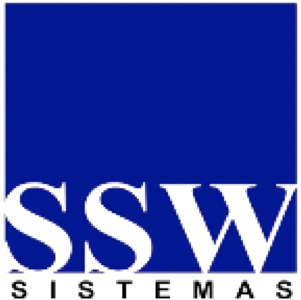
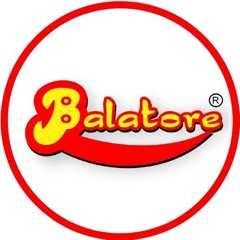

Tecnologia inteligente para logística
Roteirização e gestão de entregas para distribuidoras e autopeças. Monte as rotas do dia em minutos, saiba onde está cada entrega e encontre qualquer canhoto na hora.
+130 clientes +1,6 milhão de entregas por mês Blumenau/SC

Quem já entrega com a Grafos






Onde está o motorista? Hoje, alguém precisa ligar para saber.
O cliente liga para o comercial. O comercial liga para a expedição. A expedição liga para o motorista. Quando a resposta volta, já virou telefone sem fio.
E antes disso alguém ficou com as notas fiscais na mão, colocando as paradas em ordem: de 10 a 15 minutos por motorista, todo dia. Com 10 motoristas, são mais de duas horas só nisso.
- Rota montada à mão, nota por nota.
- Ligação o dia inteiro para saber onde está a entrega.
- Canhoto perdido, ou uma foto que não prova nada.
- Quando quem monta a rota sai de férias, a rota sai errada.
- Quilômetro e combustível a mais em rota feita no olho.
Do pedido ao canhoto, no mesmo sistema.
O pedido sai do seu ERP, vira rota, vai para o celular do motorista e volta como entrega comprovada. Com a integração, ninguém digita o pedido de novo.
-

Antes da saída,
planeje.
A Grafos ordena as paradas a partir das notas do dia. O analista revisa e libera as rotas, sem colocar nota por nota em ordem.
Roteirização › -

Durante a rota,
acompanhe.
O motorista segue a rota no app. Quando o cliente ligar, o comercial abre o painel e responde na hora, sem ligar para ninguém.
Gestão de entregas › -

A cada entrega,
comprove.
Cada entrega guarda a foto do canhoto tirada na hora, o local, a data e a hora, quem recebeu e o número da nota. Precisa de um canhoto de meses atrás? É só buscar pela nota.
App do motorista ›


Distribuidora ou autopeças: a mesma plataforma, no ritmo de cada operação.
A plataforma é a mesma. O que muda é o ritmo: a distribuidora tem muitas paradas por rota, a autopeças despacha várias vezes por dia.

Autopeças
Pedido urgente, várias saídas por dia e a expedição precisando de resposta rápida.
Ver solução ›Todo mês, mais de 1,6 milhão de entregas são processadas pela Grafos.
Referência: setembro de 2026.
Funciona com o ERP que você já usa.
Os pedidos e as notas fiscais saem do seu ERP e entram direto no planejamento. Com a integração ativa, ninguém exporta planilha nem digita pedido de novo.
Já temos integração com TOTVS, TOTVS Protheus, Winthor, Omie, Senior, Sankhya, CIGAM, SSW e Topsystem. Se o seu sistema não está aqui, a gente vê isso junto na demonstração.
Os logos indicam sistemas com os quais a Grafos tem integração disponível. As marcas pertencem aos seus donos e não representam parceria comercial.

O que os clientes dizem.
Avaliações deixadas no Google por quem usa a Grafos no dia a dia.
“A ferramenta roda bem com nosso administrativo e da mesma forma com os entregadores que utilizam o aplicativo de entregas, com isso otimizamos já significativamente as rotas e também o registro de informações.”

“Empresa séria e comprometida, entrega o que promete! Tivemos um enorme avanço na nossa operação de logística, com dados precisos, acompanhamento em tempo real e muitos outros benefícios.”
“O suporte é ágil, com retornos rápidos e sempre muito bem conduzidos. A equipe demonstra atenção e eficiência no dia a dia, o que facilita bastante a operação e resolução de demandas.”
Deu problema às 6h da manhã? Tem gente da Grafos no grupo.
Cada cliente tem um grupo de WhatsApp só da sua operação, com a nossa equipe dentro, 24 horas por dia. Nada de abrir chamado e esperar resposta por e-mail.
- Das 7h às 19h, a resposta vem quase na hora.
- À noite tem plantão: se ninguém responder no grupo em 2 ou 3 minutos, é só ligar para o número de plantão.
- Quem responde já conhece a sua operação.
- Vídeos curtos para treinar a equipe e os motoristas.
- Reuniões periódicas para revisar como a operação está rodando.
É o que os clientes mais elogiam nas avaliações do Google.
Começou com uma semana difícil na loja da família.
A Grafos foi criada por Pietra, Lorenzo e Pedro a partir de um problema da loja de material de construção da família: uma semana em que quem cuidava das entregas precisou se afastar, e ninguém sabia por onde ir.
Por isso ela é feita por quem já ficou com a pilha de notas na mão e o telefone tocando.
O nome vem da Teoria dos Grafos, a matemática por trás da roteirização: pontos ligados por conexões.
Conheça a Grafos ›- 2020
Uma tela para dividir as rotas
A Pietra assumiu as entregas, se perdeu nos endereços e pediu ao Pedro uma tela para dividir as rotas entre um lado e o outro da cidade.
- O primeiro cliente
Uma distribuidora em Gaspar
Depois de melhorar o sistema dentro de casa, ele saiu para a primeira operação de fora.
- Hoje
Uma equipe em Blumenau
Distribuidoras e autopeças de vários estados usando a Grafos no dia a dia.
Dúvidas comuns antes de contratar.
A Grafos integra com o meu ERP?
Sim. A integração é direta, pelo banco de dados ou pela API do seu ERP, sem planilha nem troca de arquivo. Ela é configurada pela nossa equipe junto com o seu time de TI.
O app funciona sem internet?
Funciona. O motorista segue a rota e registra as entregas mesmo sem sinal, no Android e no iPhone. Os registros sobem para o sistema quando a conexão volta.
A Grafos Tech tem aplicativo para o motorista?
Sim. Há aplicativo para Android e iOS com a rota do dia, navegação, comprovação de entrega pelo celular e leitura de etiquetas QR Code.
O sistema funciona para frota própria e terceirizada?
Sim, nos dois casos. A plataforma controla rotas, comprovação de entregas e prestação de contas tanto para frota própria quanto terceirizada.
Dá para testar antes de contratar?
Dá. O teste é gratuito e feito com a sua operação de verdade: as notas de um dia e alguns dos seus motoristas usando o app. Assim você vê a Grafos funcionando antes de decidir.
Quanto tempo leva para implantar?
Em média, de 30 a 45 dias. O prazo depende da integração com o seu ERP e da disponibilidade da sua equipe de TI. Desde a primeira semana, a montagem de rotas e a gestão de canhotos já ficam mais rápidas.
Quanto custa a Grafos Tech?
O investimento depende do tamanho da operação: número de veículos, volume de entregas por dia e módulos contratados. Por isso não trabalhamos com tabela fechada. Na demonstração levantamos esses dados e apresentamos a proposta dimensionada para a sua realidade, sem surpresa depois. Agende a demonstração.
Veja a Grafos montando as rotas da sua operação.
- Conversa A gente entende como você entrega hoje: volume, veículos, ERP.
- Demonstração Você vê a Grafos funcionando com rotas parecidas com as suas.
- Teste gratuito Você testa com as notas e os motoristas da sua própria operação, sem custo.